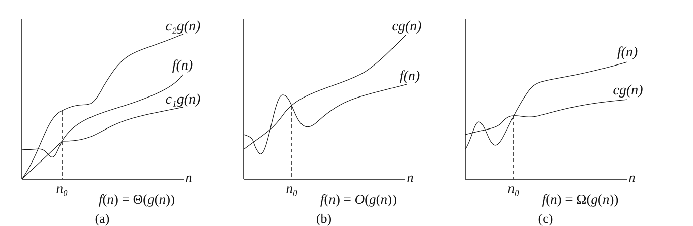
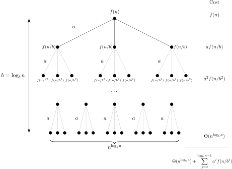

OI Wiki · prijevod · Osnove algoritamaOI Wiki · translation · Algorithm basics
SloženostComplexity
Sadržaj
Vremenska i prostorna složenost važna su mjerila učinkovitosti algoritma.
Broj osnovnih operacija
Isti algoritam na različitim računalima radi različitom brzinom, a stvarnu brzinu izvođenja teško je teorijski izračunati i nezgodno je mjeriti; zato obično ne promatramo stvarno vrijeme izvođenja, nego broj osnovnih operacija koje algoritam mora obaviti.
Na običnom računalu zbrajanje, oduzimanje, množenje, dijeljenje, pristup varijabli (osnovnog tipa, i dalje u tekstu) i pridruživanje vrijednosti varijabli mogu se smatrati osnovnim operacijama.
Brojanje ili procjena osnovnih operacija može služiti kao mjerilo vremena izvođenja algoritma.
Vremenska složenost
Definicija
Pri mjerenju brzine algoritma nužno treba uzeti u obzir veličinu podataka. Veličina podataka obično znači broj brojeva u ulazu, broj vrhova i bridova grafa u ulazu i slično. Općenito, što su podaci veći, algoritam radi dulje. U natjecateljskom programiranju pri ocjeni učinkovitosti algoritma najvažnije nije vrijeme na nekoj konkretnoj veličini podataka, nego trend rasta vremena s veličinom podataka – vremenska složenost.
Uvod
Glavni razlozi zašto promatramo trend rasta vremena s veličinom podataka:
- Suvremena računala izvode stotine milijuna i više osnovnih operacija u sekundi, pa su podaci koje obrađujemo obično veliki. Ako algoritmu A na podacima veličine \(n\) treba \(100n\), a algoritmu B \(n^2\), za \(n\) manji od \(100\) algoritam B je brži, ali u jednoj sekundi algoritam A obradi podatke veličine nekoliko milijuna, a B samo nekoliko desetaka tisuća. Kad je dopušteno dulje izvođenje, utjecaj vremenske složenosti na veličinu obradivih podataka postaje još izraženiji i daleko veći od razlike vremena na istoj veličini podataka;
- Vrijeme izvođenja izražavamo brojem osnovnih operacija, a stvarno trajanje pojedinih osnovnih operacija razlikuje se – zbrajanje i oduzimanje puno su brži od dijeljenja. Računanjem vremenske složenosti i zanemarivanjem razlika između osnovnih operacija te razlike između jedne i deset osnovnih operacija uklanjamo utjecaj različitog trajanja operacija.
Naravno, vrijeme izvođenja ne ovisi samo o veličini ulaza nego i o njegovu sadržaju. Zato se vremenska složenost dijeli na nekoliko vrsta, npr.:
- najgora vremenska složenost – složenost koja odgovara ulazu koji za svaku veličinu traje najdulje. U natjecateljskom programiranju ulaz može biti bilo koji unutar zadanih ograničenja, pa da bi algoritam prošao sve podatke u tom rasponu obično promatramo najgoru složenost;
- prosječna (očekivana) vremenska složenost – očekivanje vremena izvođenja uz pretpostavku da su svi ulazi jednako vjerojatni.
„Trend rasta vremena s veličinom podataka” nejasan je pojam, pa za formalni zapis vremenske složenosti koristimo asimptotske oznake opisane u nastavku.
Definicija asimptotskih oznaka
Asimptotske oznake standardni su opis reda funkcije. Jednostavno rečeno, zanemaruju dijelove funkcije koji rastu sporije i koeficijente članova (u analizi složenosti koeficijenti se obično zovu „konstante”), a zadržavaju važan dio koji pokazuje trend rasta funkcije.
Jednostavno pravilo za pamćenje: s jednakošću (nestrogo) velika slova, bez jednakosti (strogo) mala; jednako je \(\Theta\), manje je \(O\), veće je \(\Omega\). Veliko \(O\) i malo \(o\) izvorno su grčko slovo omikron, ali zbog istog oblika mogu se shvatiti i kao latinično veliko \(O\) i malo \(o\).
U engleskom korijeni „-micro-” i „-mega-” označavaju \(10^{-6}\) (milijunti dio) i \(10^{6}\) (milijun), ali i „malo” i „veliko”. Malo i veliko također su uobičajena značenja grčkih slova omikron i omega.
Oznaka veliko Θ
Za funkcije \(f(n)\) i \(g(n)\) vrijedi \(f(n)=\Theta(g(n))\) ako i samo ako \(\exists c_1,c_2,n_0>0\) takvi da \(\forall n \ge n_0, 0\le c_1\cdot g(n)\le f(n) \le c_2\cdot g(n)\).
Drugim riječima, ako je \(f(n)=\Theta(g(n))\), postoje dva pozitivna broja \(c_1, c_2\) takva da je \(f(n)\) stisnuta između \(c_1\cdot g(n)\) i \(c_2\cdot g(n)\).
Primjerice, \(3n^2+5n-3=\Theta(n^2)\); ovdje \(c_1, c_2, n_0\) mogu biti \(2, 4, 100\). Također \(n\sqrt {n} + n{\log^5 n} + m{\log m} +nm=\Theta(n\sqrt {n} + m{\log m} + nm)\), jer je \(\log^5 n=o(\sqrt n)\), pa postoji dovoljno velik \(n_0\) za koji izostavljeni član ne prelazi \(n\sqrt n\).
Oznaka veliko O
Oznaka \(\Theta\) daje i gornju i donju ogradu funkcije; ako znamo samo asimptotsku gornju ogradu, a ne i donju, koristimo oznaku \(O\). \(f(n)=O(g(n))\) ako i samo ako \(\exists c,n_0>0\) takvi da \(\forall n \ge n_0,0\le f(n)\le c\cdot g(n)\).
Pri proučavanju vremenske složenosti obično se koristi oznaka \(O\), jer nas obično zanima gornja ograda vremena programa, a ne donja.
Treba napomenuti da se „gornja” i „donja ograda” ovdje odnose na trend funkcije, a ne na algoritam. Gornja ograda vremena algoritma odgovara „najgoroj vremenskoj složenosti”, a ne oznaci veliko \(O\). Zato je najgoru složenost potpuno ispravno pisati oznakom \(\Theta\); može se čak reći da je \(\Theta\) preciznija od \(O\). Glavni razlozi uporabe \(O\) su: prvo, katkad možemo dokazati samo gornju ogradu složenosti, a ne i donju (obično kod složenijih algoritama i analiza); drugo, \(O\) je na računalu jednostavnije utipkati.
Oznaka veliko Ω
Slično, oznakom \(\Omega\) opisujemo asimptotsku donju ogradu funkcije. \(f(n)=\Omega(g(n))\) ako i samo ako \(\exists c,n_0>0\) takvi da \(\forall n \ge n_0,0\le c\cdot g(n)\le f(n)\).
Oznaka malo o
Ako oznaka \(O\) odgovara znaku „manje ili jednako”, oznaka \(o\) odgovara znaku „manje”.
Malo \(o\) široko se koristi u matematičkoj analizi: Taylorov razvoj funkcije u točki ima Peanov ostatak, a malo \(o\) označava strogo manje, čime se provodi asimptotska analiza ekvivalentnih infinitezimala.
\(f(n)=o(g(n))\) ako i samo ako za svaki zadani pozitivni \(c\) postoji \(n_0\) takav da \(\forall n \ge n_0,0\le f(n)< c\cdot g(n)\).
Oznaka malo ω
Ako oznaka \(\Omega\) odgovara znaku „veće ili jednako”, oznaka \(\omega\) odgovara znaku „veće”.
\(f(n)=\omega(g(n))\) ako i samo ako za svaki zadani pozitivni \(c\) postoji \(n_0\) takav da \(\forall n \ge n_0,0\le c\cdot g(n)< f(n)\).

Uobičajena svojstva
- \(f(n) = \Theta(g(n))\iff f(n)=O(g(n))\land f(n)=\Omega(g(n))\).
- \(f_1(n) + f_2(n) = O(\max(f_1(n), f_2(n)))\).
- \(f_1(n) \times f_2(n) = O(f_1(n) \times f_2(n))\).
- \(\forall a>1, \log_a{n} = O(\log_2 n)\). Iz formule za promjenu baze slijedi da za fiksnu realnu bazu \(a>1\) sve logaritamske funkcije imaju isti rast, pa se baza logaritma u asimptotskoj složenosti obično ne piše.
Jednostavni primjeri računanja vremenske složenosti
Petlja for
int n, m;
std::cin >> n >> m;
for (int i = 0; i < n; ++i) {
for (int j = 0; j < n; ++j) {
for (int k = 0; k < m; ++k) {
std::cout << "hello world\n";
}
}
}
n = int(input())
m = int(input())
for i in range(0, n):
for j in range(0, n):
for k in range(0, m):
print("hello world")
int n, m;
n = input.nextInt();
m = input.nextInt();
for (int i = 0; i < n; ++i) {
for (int j = 0; j < n; ++j) {
for (int k = 0; k < m; ++k) {
System.out.println("hello world");
}
}
}
Ako veličinom podataka smatramo vrijednosti \(n\) i \(m\) iz ulaza, vremenska složenost gornjeg koda je \(\Theta(n^2m)\).
DFS
Pri DFS-u na povezanom grafu s \(n\) vrhova i \(m\) bridova pohranjenom listama susjedstva svaki se vrh i brid posjećuje konstantan broj puta, pa je složenost \(\Theta(n+m)\).
Što je konstanta
Kad izvodimo neki broj operacija, kako odlučiti utječe li taj broj na vremensku složenost? Primjerice:
constexpr int N = 100000;
for (int i = 0; i < N; ++i) {
std::cout << "hello world\n";
}
N = 100000
for i in range(0, N):
print("hello world")
final int N = 100000;
for (int i = 0; i < N; ++i) {
System.out.println("hello world");
}
Ako se \(N\) ne smatra veličinom ulaza, vremenska složenost ovog koda je \(O(1)\).
Pri računanju vremenske složenosti vrlo je važno koje se varijable smatraju veličinom ulaza; sve veličine neovisne o veličini ulaza smatraju se konstantama i pri računanju složenosti tretiraju kao \(1\).
Napomena: u teorijskim raspravama o vremenskoj složenosti osnovna je pretpostavka da „algoritam može riješiti problem bilo koje veličine” (u praksi, naravno, zbog ograničenog vremena i memorije prevelike probleme ne možemo riješiti). Zato mogućnost da se problem ograničene veličine riješi u konstantnom vremenu (npr. unaprijed izračunati odgovor za svaki mogući ulaz u zadanom rasponu) ne čini složenost algoritma \(O(1)\).
Glavni teorem
Glavni teorem (master theorem) omogućuje brzo određivanje složenosti rekurzivnih algoritama. Neka su \(a\ge1\), \(b>1\) konstante, \(f\) nenegativna i \(T(1)=\Theta(1)\). Radi jednostavnosti dodatno pretpostavimo \(n=b^L\), gdje je \(L\) nenegativan cijeli broj. Rekurzivna relacija glasi:
Tada
Napomena: u drugom slučaju mora biti ispunjen i uvjet regularnosti (regularity condition): postoji konstanta \(0<c<1\) takva da za dovoljno velike \(n\) vrijedi \(a f(n/b) \leq c f(n)\).
Ideja dokaza: problem veličine \(n\) rastavi se na \(a\) problema veličine \(n/b\), koji se zatim redom spajaju do najviše razine. Svako spajanje potproblema stoji \(f(n)\) vremena.
Dokaz
Prema gore navedenoj ideji, dokaz teče ovako:
Na razini \(0\) (najvišoj) spajanje potproblema stoji \(f(n)\).
Na razini \(1\) (potproblemi iz prve podjele) ima \(a\) potproblema, a spajanje svakog stoji \(f\left(\dfrac{n}{b}\right)\), pa spajanje ukupno stoji \(a f\left(\dfrac{n}{b}\right)\).
Nastavljajući razinu po razinu dobivamo sljedeće rekurzivno stablo:

Stablo završava na razini \(L=\log_b n\) i ima \(a^L=n^{\log_b a}\) listova. Unutarnje razine označene su \(0,\ldots,L-1\), pa je \(T(n) = \Theta(n^{\log_b a}) + g(n)\), gdje je \(g(n) = \sum_{j = 0}^{L-1} a^{j} f(n / b^{j})\).
Prvi slučaj: \(f(n) = O(n^{\log_b a-\epsilon})\), pa je \(g(n) = O(n^{\log_b a})\).
Drugi slučaj: trošak korijena je \(T(n)=\Omega(f(n))\). Po uvjetu regularnosti, dok su potproblemi dovoljno veliki ukupni trošak razine \(j\) iznosi najviše \(c^j f(n)\), pa je zbroj troškova tih razina \(O(f(n))\). Preostali konstantan broj donjih razina i listovi stoje ukupno \(O(n^{\log_b a})=O(f(n))\), pa je \(T(n)=\Theta(f(n))\).
Treći slučaj: neka je \(p=\log_b a\). Za dovoljno velike potprobleme ukupni trošak razine \(j\) je \(\Theta(n^p(L-j)^k)\), gdje je \(k\ge0\) fiksna konstanta. Uzmimo fiksni \(r_0\ge1\) takav da \(b^{r_0}\) doseže tu veličinu; iz \(\sum_{r=r_0}^L r^k=\Theta(L^{k+1})\) slijedi da je ukupni trošak tih razina \(\Theta(n^p\log^{k+1}n)\). Preostale donje razine i listovi stoje ukupno \(O(n^p)\), i zbrajanjem dobivamo tvrdnju.
Nekoliko primjera uporabe glavnog teorema:
-
\(T(n) = 2T\left(\dfrac{n}{2}\right) + 1\): tada je \(a=2, b=2, {\log_2 2} = 1\), \(\epsilon\) može biti iz \((0, 1]\), vrijedi prvi slučaj, pa je \(T(n) = \Theta(n)\);
-
\(T(n) = T\left(\dfrac{n}{2}\right) + n\): tada je \(a=1, b=2, {\log_2 1} = 0\), \(\epsilon\) može biti iz \((0, 1]\), vrijedi drugi slučaj, pa je \(T(n) = \Theta(n)\);
-
\(T(n) = T\left(\dfrac{n}{2}\right) + {\log n}\): tada je \(a=1, b=2, {\log_2 1}=0\), \(k\) može biti \(1\), vrijedi treći slučaj, pa je \(T(n) = \Theta(\log^2 n)\);
-
\(T(n) = T\left(\dfrac{n}{2}\right) + 1\): tada je \(a=1, b=2, {\log_2 1} = 0\), \(k\) može biti \(0\), vrijedi treći slučaj, pa je \(T(n) = \Theta(\log n)\).
Amortizirana složenost
Više na stranici Amortizirana analiza.
Prostorna složenost
Slično, trend rasta memorije koju algoritam koristi s veličinom ulaza mjeri se prostornom složenošću.
Računska složenost
Ovaj je članak složenost predstavio iz perspektive analize algoritama; zainteresirani mogu dublje zaviriti u računsku složenost.
Contents
Time complexity and space complexity are important measures of the efficiency of an algorithm.
Number of basic operations
The same algorithm runs at somewhat different speeds on different computers, and the actual running speed is hard to compute theoretically and tedious to measure, so we usually consider not the actual running time of an algorithm but the number of basic operations it has to perform.
On an ordinary computer, addition, subtraction, multiplication, division, accessing a variable (of a basic data type, likewise below) and assigning to a variable can all be regarded as basic operations.
Counting or estimating the basic operations can serve as a measure of the running time of an algorithm.
Time complexity
Definition
When measuring how fast an algorithm is, the size of the data must be taken into account. Data size generally means the number of numbers in the input, the number of vertices and edges of a graph given in the input, and so on. Generally, the larger the data, the longer the algorithm takes. In competitive programming, when judging the efficiency of an algorithm, what matters most is not its running time at some particular data size but how its running time grows with the data size – the time complexity.
Introduction
The main reasons for considering how running time grows with data size are:
- Modern computers perform hundreds of millions or more basic operations per second, so the data we handle is usually large. If algorithm A takes \(100n\) on data of size \(n\) and algorithm B takes \(n^2\), then B is faster for sizes below \(100\), but within one second A can handle data of size in the millions while B can only handle tens of thousands. When longer running times are allowed, the effect of time complexity on the manageable data size becomes even more pronounced, far exceeding the difference in running time at the same data size;
- We express running time by the number of basic operations, yet different basic operations take different amounts of time – e.g. addition and subtraction are much faster than division. Computing the time complexity while ignoring the differences between basic operations, and the difference between one and ten basic operations, removes the effect of these differing costs.
Of course, running time is not determined entirely by the input size; it also depends on the input contents. So time complexity comes in several kinds, e.g.:
- worst-case time complexity, i.e. the time complexity corresponding to the slowest input of each size. In competitive programming the input can be anything within the given constraints, so to guarantee that an algorithm passes every input in a given range we usually consider the worst-case time complexity;
- average-case (expected) time complexity, i.e. the expected running time under the assumption that all inputs are equally likely.
"How running time grows with data size" is a vague notion; we need the asymptotic notation introduced below to express time complexity formally.
Definition of asymptotic notation
Asymptotic notation is a standard description of the order of a function. Simply put, it ignores the slower-growing parts of a function and the coefficients of its terms (in complexity analysis the coefficients are usually called "constants"), while keeping the important part that shows the growth trend of the function.
A simple mnemonic: with equality (non-strict) use uppercase, without equality (strict) use lowercase; equal is \(\Theta\), less is \(O\), greater is \(\Omega\). Big \(O\) and little \(o\) are originally the Greek letter omicron, but since the glyphs are identical they can also be read as the Latin uppercase \(O\) and lowercase \(o\).
In English the roots "-micro-" and "-mega-" commonly denote \(10^{-6}\) (one millionth) and \(10^{6}\) (one million), and also "small" and "large". Small and large are also the meanings commonly attached to the Greek letters omicron and omega.
Big Θ notation
For functions \(f(n)\) and \(g(n)\), \(f(n)=\Theta(g(n))\) if and only if \(\exists c_1,c_2,n_0>0\) such that \(\forall n \ge n_0, 0\le c_1\cdot g(n)\le f(n) \le c_2\cdot g(n)\).
In other words, if \(f(n)=\Theta(g(n))\), then we can find two positive numbers \(c_1, c_2\) such that \(f(n)\) is sandwiched between \(c_1\cdot g(n)\) and \(c_2\cdot g(n)\).
For example, \(3n^2+5n-3=\Theta(n^2)\); here \(c_1, c_2, n_0\) can be \(2, 4, 100\) respectively. Also \(n\sqrt {n} + n{\log^5 n} + m{\log m} +nm=\Theta(n\sqrt {n} + m{\log m} + nm)\), because \(\log^5 n=o(\sqrt n)\), so there is a large enough \(n_0\) for which the omitted term does not exceed \(n\sqrt n\).
Big O notation
The \(\Theta\) notation gives both an upper and a lower bound of a function; if we only know an asymptotic upper bound but not a lower bound, we can use the \(O\) notation. \(f(n)=O(g(n))\) if and only if \(\exists c,n_0>0\) such that \(\forall n \ge n_0,0\le f(n)\le c\cdot g(n)\).
When studying time complexity we usually use \(O\), because we usually care about an upper bound on the program's running time, not a lower bound.
Note that "upper bound" and "lower bound" here refer to the growth trend of the function, not to the algorithm. The upper bound on the running time of an algorithm corresponds to the "worst-case time complexity", not to the big \(O\) notation. So it is perfectly fine to express worst-case time complexity with \(\Theta\); one could even say \(\Theta\) is more precise than \(O\). The main reasons for using \(O\) are: first, sometimes we can only prove an upper bound on the time complexity and not a lower bound (this usually happens with more complex algorithms and analyses); second, \(O\) is easier to type on a computer.
Big Ω notation
Similarly, we use \(\Omega\) to describe an asymptotic lower bound of a function. \(f(n)=\Omega(g(n))\) if and only if \(\exists c,n_0>0\) such that \(\forall n \ge n_0,0\le c\cdot g(n)\le f(n)\).
Little o notation
If \(O\) corresponds to "less than or equal", then \(o\) corresponds to "less than".
Little \(o\) is used extensively in mathematical analysis: the Taylor expansion of a function at a point has a Peano remainder, and little \(o\) expresses "strictly smaller", enabling asymptotic analysis with equivalent infinitesimals.
\(f(n)=o(g(n))\) if and only if for every given positive \(c\) there exists \(n_0\) such that \(\forall n \ge n_0,0\le f(n)< c\cdot g(n)\).
Little ω notation
If \(\Omega\) corresponds to "greater than or equal", then \(\omega\) corresponds to "greater than".
\(f(n)=\omega(g(n))\) if and only if for every given positive \(c\) there exists \(n_0\) such that \(\forall n \ge n_0,0\le c\cdot g(n)< f(n)\).
Common properties
- \(f(n) = \Theta(g(n))\iff f(n)=O(g(n))\land f(n)=\Omega(g(n))\).
- \(f_1(n) + f_2(n) = O(\max(f_1(n), f_2(n)))\).
- \(f_1(n) \times f_2(n) = O(f_1(n) \times f_2(n))\).
- \(\forall a>1, \log_a{n} = O(\log_2 n)\). By the change-of-base formula, for any fixed real base \(a>1\) all logarithmic functions have the same growth rate, so the base of the logarithm is usually omitted in asymptotic time complexity.
Simple examples of computing time complexity
for loops
int n, m;
std::cin >> n >> m;
for (int i = 0; i < n; ++i) {
for (int j = 0; j < n; ++j) {
for (int k = 0; k < m; ++k) {
std::cout << "hello world\n";
}
}
}
n = int(input())
m = int(input())
for i in range(0, n):
for j in range(0, n):
for k in range(0, m):
print("hello world")
int n, m;
n = input.nextInt();
m = input.nextInt();
for (int i = 0; i < n; ++i) {
for (int j = 0; j < n; ++j) {
for (int k = 0; k < m; ++k) {
System.out.println("hello world");
}
}
}
If we take the input values \(n\) and \(m\) as the data size, the time complexity of the code above is \(\Theta(n^2m)\).
DFS
When running DFS on a connected graph with \(n\) vertices and \(m\) edges stored as adjacency lists, each vertex and each edge is visited only a constant number of times, so the complexity is \(\Theta(n+m)\).
Which quantities are constants
When we perform some number of operations, how do we decide whether that number affects the time complexity? For example:
constexpr int N = 100000;
for (int i = 0; i < N; ++i) {
std::cout << "hello world\n";
}
N = 100000
for i in range(0, N):
print("hello world")
final int N = 100000;
for (int i = 0; i < N; ++i) {
System.out.println("hello world");
}
If the size of \(N\) is not regarded as input size, then the time complexity of this code is \(O(1)\).
When computing time complexity it is very important which variables are regarded as the input size; all quantities independent of the input size are regarded as constants and can be treated as \(1\) when computing complexity.
Note that in theoretical discussions of time complexity, "the algorithm can solve problems of any size" is a basic assumption (in practice, of course, problems that are too large cannot be solved because time and memory are limited). Therefore, being able to solve a problem of bounded size in constant time (e.g. by precomputing the answer for every possible input within the data range) does not make an algorithm's time complexity \(O(1)\).
Master theorem
We can use the master theorem to quickly obtain the complexity of recursive algorithms. Assume \(a\ge1\), \(b>1\) are constants, \(f\) is non-negative and \(T(1)=\Theta(1)\). To simplify the discussion, additionally assume \(n=b^L\) with \(L\) a non-negative integer. The recurrence is:
Then
Note that the second case additionally requires the regularity condition: there is a constant \(0<c<1\) such that \(a f(n/b) \leq c f(n)\) for all sufficiently large \(n\).
The idea of the proof is to decompose a problem of size \(n\) into \(a\) problems of size \(n/b\), and then merge them level by level up to the top. Each merge of subproblems costs \(f(n)\) time.
Proof
Following the idea above, the proof goes as follows:
At level \(0\) (the top), merging the subproblems costs \(f(n)\).
At level \(1\) (the subproblems from the first split) there are \(a\) subproblems, each costing \(f\left(\dfrac{n}{b}\right)\) to merge, so merging costs \(a f\left(\dfrac{n}{b}\right)\) in total.
Continuing level by level, we can draw the following recursion tree:
The tree ends at level \(L=\log_b n\) and has \(a^L=n^{\log_b a}\) leaves. The non-leaf levels are numbered \(0,\ldots,L-1\), so \(T(n) = \Theta(n^{\log_b a}) + g(n)\) where \(g(n) = \sum_{j = 0}^{L-1} a^{j} f(n / b^{j})\).
In the first case, \(f(n) = O(n^{\log_b a-\epsilon})\), hence \(g(n) = O(n^{\log_b a})\).
In the second case, the cost of the root is \(T(n)=\Omega(f(n))\). By the regularity condition, while the subproblems are still large enough the total cost of level \(j\) is at most \(c^j f(n)\), and these levels sum to \(O(f(n))\). The remaining constant number of bottom levels and the leaves cost \(O(n^{\log_b a})=O(f(n))\) in total, hence \(T(n)=\Theta(f(n))\).
In the third case, let \(p=\log_b a\). For sufficiently large subproblems, the total cost of level \(j\) is \(\Theta(n^p(L-j)^k)\) where \(k\ge0\) is a fixed constant. Fix \(r_0\ge1\) such that \(b^{r_0}\) reaches that size; from \(\sum_{r=r_0}^L r^k=\Theta(L^{k+1})\) the total cost of these levels is \(\Theta(n^p\log^{k+1}n)\). The remaining bottom levels and leaves cost \(O(n^p)\) in total, and adding them gives the result.
Here are some examples of using the master theorem.
-
\(T(n) = 2T\left(\dfrac{n}{2}\right) + 1\): then \(a=2, b=2, {\log_2 2} = 1\), \(\epsilon\) can be taken in \((0, 1]\), so the first case applies and \(T(n) = \Theta(n)\);
-
\(T(n) = T\left(\dfrac{n}{2}\right) + n\): then \(a=1, b=2, {\log_2 1} = 0\), \(\epsilon\) can be taken in \((0, 1]\), so the second case applies and \(T(n) = \Theta(n)\);
-
\(T(n) = T\left(\dfrac{n}{2}\right) + {\log n}\): then \(a=1, b=2, {\log_2 1}=0\), \(k\) can be taken as \(1\), so the third case applies and \(T(n) = \Theta(\log^2 n)\);
-
\(T(n) = T\left(\dfrac{n}{2}\right) + 1\): then \(a=1, b=2, {\log_2 1} = 0\), \(k\) can be taken as \(0\), so the third case applies and \(T(n) = \Theta(\log n)\).
Amortised complexity
See Amortised analysis for details.
Space complexity
Similarly, how the memory used by an algorithm grows with the input size is measured by its space complexity.
Computational complexity
This article introduced complexity from the viewpoint of algorithm analysis; if you are interested, you can learn more at Computational complexity.